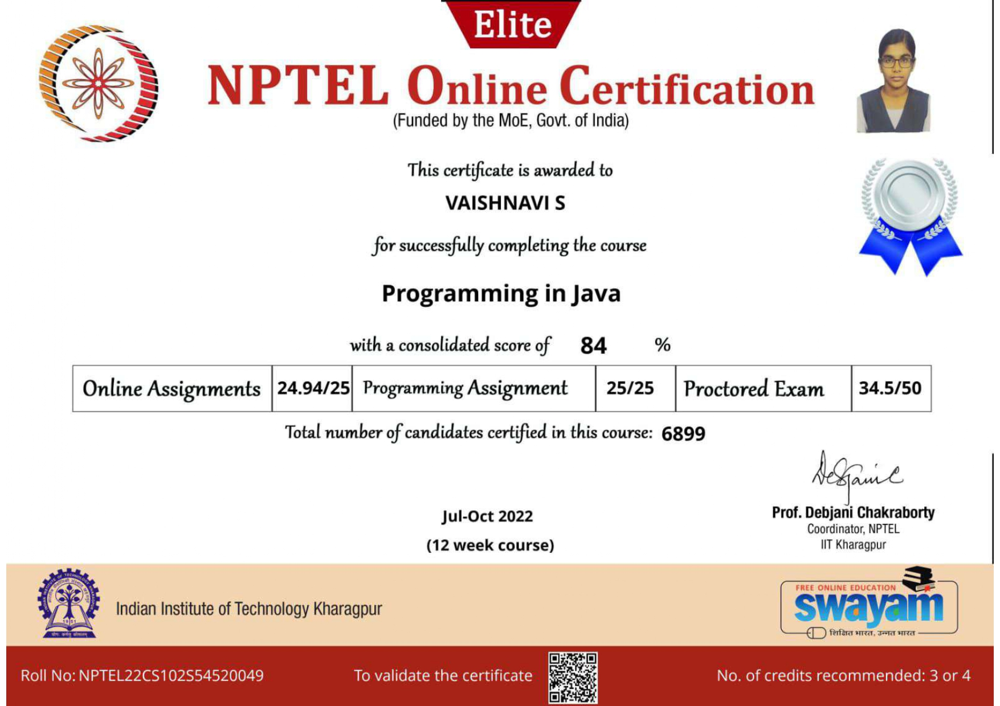

Contact:
- +91 9385991545
- vaishnavisiva05@gmail.com
- www.linkedin.com/in/vaish05
Area of Interest:
- Database Management System
- Machine Learning
Technical Skills:
- Java
- SQL
- C
- HTML
- CSS
- Javascript
Soft Skills:
- Self Learning
- Adaptability
- Team Work
Contest:
- Perticipated in Virtusa’s global initiative “Engineering Equity Hackathon
- Participated in Level 1: E-Commerce and Tech-Quiz of Flipkart GRID 4.0 -Software Development Challenge.
Personal Details:
- DOB:05.05.2002
- Fathername:Mr.Sivakumar S
- Tamil - R,W,S
English - R,W,S - 8/26 , A North Street, Kallipalayam,Vengarai(Post), P.Velur(T.K),Namakkal(D.T) - 637208
Place:Namakkal
Date:
Date:
Objective:
To get an opportunity in an reputed company, where I can learn new skills, expand my knowledge and work for the company’s growth
Education Details:
| Grade | School | Percentage |
|---|---|---|
| B.E (CSE) | M.Kumarasamy College of Engineering,Karur | 89.2% |
| 12th | Green Park Matric Hr.Sec. School,Namakkal | 69.5% |
| 10th | Vivekananda Matric. Hr.Sec.School, Paundamangalam | 98.6% |
Projects:
MKCE MINI ATTENDANCE TRACKING SYSTEM(JULY-SEPTEMBER 2021)
This system authenticates the user and provide details specific to
the particular individual.It provides historical presence to both
students and staffs.
CARDIUM DISEASE PREDICTION(JULY-SEPTEMBER 2022)
This project is uesd to predict whether the person has the possibility
of heart disease or not.Using python libraries and machine learning
algorithms,it was developed.
EARTHQUAKE PREDICTOR AND PRECAUTION SYSTEM(JAN-MAY 2023)
This system predicts whether there is a possibility of earthquake in a particular place using the Random Forest Algorithm and the precaution steps are displayed using HTML and CSS.
Co-Curricular Activities:
Internship
- All India Council for Technical Education(AICTE)
- AI-ML Virtual Internship(May-July 2023) - MKCS DIGITTECH SOLUTIONS
- Web development Internship(11/04/22 to 25/04/22)
Course Completion
- Completed PROGRAMMING IN JAVA course with 84 % with ELITE+ SILVER in National Programme on Technology Enhanced Learning(NPTEL)
- Completed C PROGRAMMING course offered by UDEMY
- Completed CRASH COURSE ON PYTHON offered by COURSERA.
- Completed MACHINE LEARNING-LINEAR REGRESSION offered by ANALYTTICA
- Completed PYTHON PROGRAMMING For Beginners course offered by UDEMY.

Signature
(VAISHNAVI S)